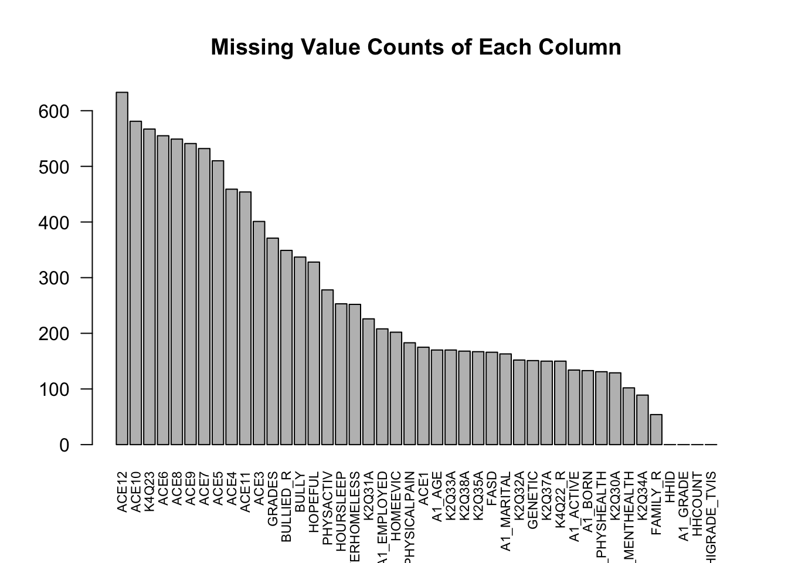
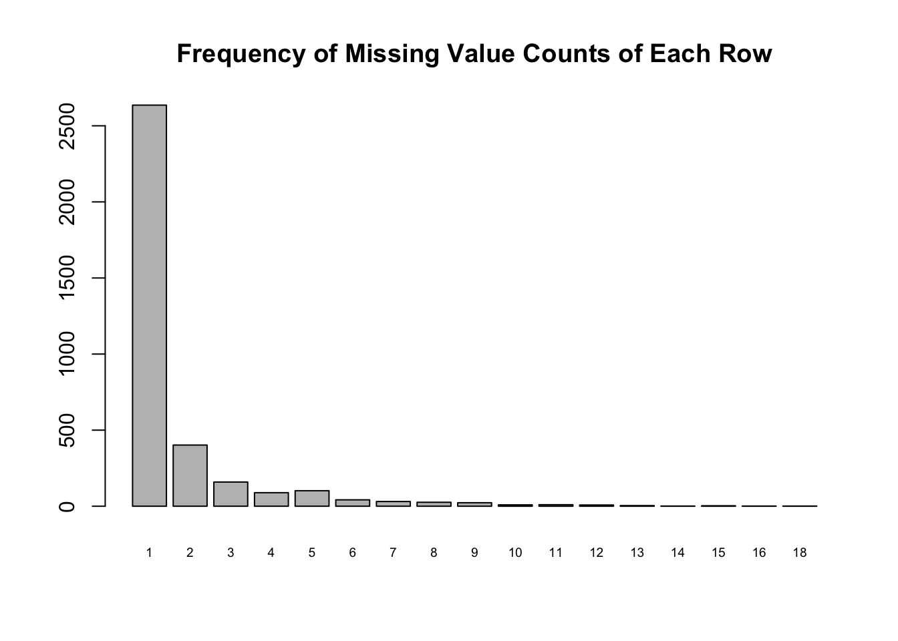
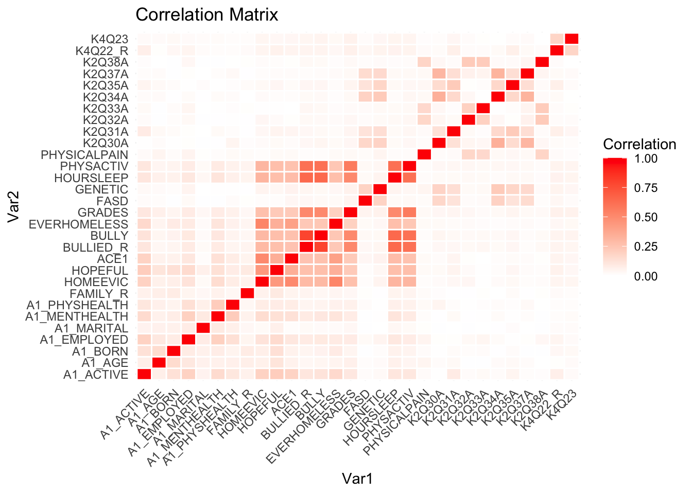

Code
nsch_df <- read.csv("data/nsch.csv")
missing <- is.na(nsch_df)
dim(nsch_df)[1] 33264 44Code
dim(nsch_df[apply(missing, 1, any), ])[1] 4730 44We obtained the data from the United States Census Bureau Website, which is an official website of the US government. The data is collected from 2022 NSCH (National Survey of Children’s Health), a national and state-level survey on information related to the physical and mental health of children from 0 to 17 years old. The survey is conducted by the United States Census Bureau, Associate Director for Demographic Programs on behalf of the United States Department of Health and Human Services (HHS), Health Resources and Services Administration’s (HRSA) Maternal and Child Health Bureau (MCHB) .
The 2022 Topical Data is originally in SAS format. The NSCH is conducted every year, so the data is collected and released every year. Specifically, the NSCH 2022 was collected from July 2022 to January 2023. The data has two dimensions. Each row represents a sample, and each column represents the answers to each question in the questionnaires. The 2022 Topical Data file includes records for 54,103 children (54103 rows), and there are answers to 490 questions for each child (490 columns). Issues / problems with the data The data is collected from questionnaires, so some information may not be complete. The 2022 topical data file involves both the complete and sufficient partial topical questionnaires. Therefore, we need to deal with missing values before we conduct analyses. Besides, the data involves different aspects of children’s health and well-being, but our purpose is to focus on children’s mental health. So we need to carefully identify and choose the relevant information from the 490 columns.
The original data is in SAS format, and it is not that easy to analyze. Thus, we plan to convert the data to csv format manually and store it as “nsch.csv”. Then, we just need to import the “nsch.csv” file into R-studio in DataFrame format to prepare the data for analyses.
Based on the 4 big categories of research questions, we select different census questions to explore:
Parents / Environment
A1_ACTIVE, A1_AGE, A1_BORN, A1_EMPLOYED, A1_GRADE, A1_MARITAL, A1_MENTHEALTH, A1_PHYSHEALTH, FAMILY_R, HHCOUNT, HIGRADE_TVIS, HOMEEVIC, HOPEFUL
These variables are basic information of guardians like whether they’ve served on active duty, the education level, life attitude, physical and mental health self-evaluation. Living environments like family structure and household sizes can be also considered when evaluating the correlation with mental health issues.
Children’s Experience
ACE1, ACE10, ACE11, ACE12, ACE3, ACE4, ACE5, ACE6, ACE7, ACE8, ACE9, BULLIED_R, BULLY, EVERHOMELESS, GRADES
In this category, guardians are asked to unveil their child’s traumatic experience like being treated unfairly and living in an unsettled environment. In addition, experience of peer relationship (bully, grade) are also subjects to be tested.
Physical Health
FASD, GENETIC, HOURSLEEP, PHYSACTIV, PHYSICALPAIN
By accessing the relation between mental health issues and physical health factors like activity frequency and hours of sleep, we can answer the last category of questions.
Mental Health Indicator
K2Q30A, K2Q31A, K2Q32A, K2Q33A, K2Q34A, K2Q35A, K2Q37A, K2Q38A
These are the target variables, which includes YES/NO questions on whether this child is diagnosed to have mental health issues.
Treatment Indicator
K4Q22_R, K4Q23
Information of whether this child has taken treatments/medication or not.
Since almost all questions in this census have categorical answers, we can use contingency tables to draw stacked bar charts, Cleveland dot plots and mosaic plots to see the correlation. As shown above, we kept a large set of variables to explore, and we might want to try PCA as well to reduce dimension.
Please refer to the official variable list provided on the website for detailed question prompts.
nsch_df <- read.csv("data/nsch.csv")
missing <- is.na(nsch_df)
dim(nsch_df)[1] 33264 44dim(nsch_df[apply(missing, 1, any), ])[1] 4730 44The dataset is large enough even if we choose removing all the NAs. However, we still want to figure out the pattern of missing values to avoid misinterpreation of data. We first check the number of columns/rows containing missing values using colSums() and rowSums().
colSums()col_sum_na <- colSums(missing) |> sort(decreasing = TRUE)
col_sum_na ACE12 ACE10 K4Q23 ACE6 ACE8
633 581 567 555 549
ACE9 ACE7 ACE5 ACE4 ACE11
541 532 510 459 454
ACE3 GRADES BULLIED_R BULLY HOPEFUL
401 371 349 337 328
PHYSACTIV HOURSLEEP EVERHOMELESS K2Q31A A1_EMPLOYED
278 253 252 226 208
HOMEEVIC PHYSICALPAIN ACE1 A1_AGE K2Q33A
202 183 175 170 170
K2Q38A K2Q35A FASD A1_MARITAL K2Q32A
168 167 166 163 152
GENETIC K2Q37A K4Q22_R A1_ACTIVE A1_BORN
151 150 150 134 133
A1_PHYSHEALTH K2Q30A A1_MENTHEALTH K2Q34A FAMILY_R
131 129 102 89 54
HHID A1_GRADE HHCOUNT HIGRADE_TVIS
0 0 0 0 barplot(col_sum_na, cex.names=0.7, las=2, main="Missing Value Counts of Each Column")
We can see that columns starts with “ACE” tend to have more missing values. If we check the meaning of variables, we can see that these columns are questions related to “Child Experienced”. The question prompt starts with “To the best of your knowledge”, and only 2 options (1=Yes or 2=No) are provided. People who take the questionaire might take this question as an optional one and leave it blank when they are unsure about the answer. If our inference here is correct, we can drop those rows without concerning serious effects.
rowSums()For other columns, we would want to look at the rowSums() frequency.
We are going to first remove columns starts with “ACE” (see previous section for analysis) and columns with 0 missing values. Then we filter to only include rows containing NA. We can see the dimension of missing value dataframe:
nsch_df_except_ace <- nsch_df[,-seq(16,25)]
col_wo_na <- c("HHID", "A1_GRADE", "HHCOUNT", "HIGRADE_TVIS")
col_names <- names(nsch_df_except_ace)
nsch_df_except_ace <- nsch_df_except_ace[,-which(col_names %in% col_wo_na)]
missing_except_ace <- is.na(nsch_df_except_ace)
nsch_df_except_ace <- nsch_df_except_ace[apply(missing_except_ace, 1, any), ]
dim(nsch_df_except_ace)[1] 3547 30Then, we can draw the frequency bar chart of the missing vale of each row.
freq_table_na_each_row <- rowSums(is.na(nsch_df_except_ace)) |> table()
barplot(freq_table_na_each_row, cex.names=0.6,
main="Frequency of Missing Value Counts of Each Row")
The values represented by each bin are:
freq_table_na_each_row
1 2 3 4 5 6 7 8 9 10 11 12 13 14 15 16
2636 402 159 89 102 42 31 26 23 9 10 8 4 1 3 1
18
1 After ignoring missing value in “ACE” columns, we can see among 3547 rows containing missing values, 2636 of them only have 1 value missing. This indicates that it is unlikely to have causal relationship between missing values in columns. We are going to validate this statement by drawing a correlation matrix on missing values.
Using an indicator dataframe, we put 1 on the position where the truncated dataframe has NA in that position, and put 0 otherwise. We are going to draw a correlation matrix of this indicator to see whether missing a value in column A lead to missing a value in column B.
cor_matrix <- cor(as.data.frame(missing_except_ace) +1-1)
library(ggplot2)
# Reshape the correlation matrix for ggplot
cor_df <- as.data.frame(as.table(cor_matrix))
names(cor_df) <- c("Var1", "Var2", "Corr")
# Plot the correlation matrix using ggplot2
heatmap <- ggplot(cor_df, aes(Var1, Var2, fill = Corr)) +
geom_tile(color = "white", size = 0.5) +
scale_fill_gradient2(low = "blue", high = "red", mid="white",
name = "Correlation", midpoint = 0) +
theme_minimal() +
theme(axis.text.x = element_text(angle = 45, hjust = 1)) +
labs(title = "Correlation Matrix")Warning: Using `size` aesthetic for lines was deprecated in ggplot2 3.4.0.
ℹ Please use `linewidth` instead.# Display the plot
print(heatmap)
We can see no extreme correlation is found. Given that the dataset is large enough and most columns are categorical, we choose to remove missing values.